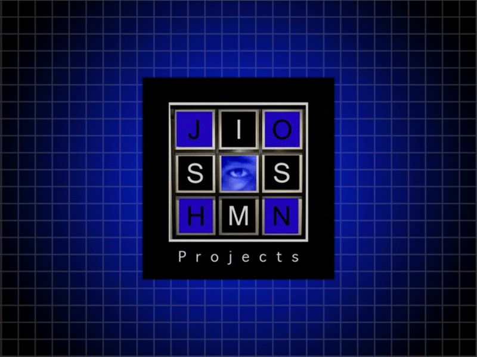

    <nav class="navbar navbar-expand-lg navbar-dark bg-dark">
      <a class="navbar-brand" href="#">
        
        John Sims Project
      </a>
      <button class="navbar-toggler" type="button" data-toggle="collapse" data-target="#navbarNav" aria-controls="navbarNav" aria-expanded="false" aria-label="Toggle navigation">
        <span class="navbar-toggler-icon"></span>
      </button>
      <div class="collapse navbar-collapse" id="navbarNav">
        <ul class="navbar-nav ">
          <li class="nav-item active">
            <a class="nav-link" ui-sref="home">Home <span class="sr-only">(current)</span></a>
          </li>
          <li class="nav-item">
            <a class="nav-link" ui-sref="test">About John</a>
          </li>
          <li class="nav-item">
            <a class="nav-link" href="#">Projects</a>
          </li>
          <li class="nav-item">
            <a class="nav-link" href="#">Media</a>
          </li>
          <li class="nav-item">
            <a class="nav-link" href="#">Contact</a>
          </li>
          <li class="nav-item">
            <a class="nav-link" href="#">Guestbook</a>
          </li>
        </ul>
      </div>
    </nav>
    <main>
      <iframe src="https://www.facebook.com/plugins/page.php?href=https%3A%2F%2Fwww.facebook.com%2Fpg%2Fjohnsimsprojects%2Fposts%2F%3Fref%3Dpage_internal&tabs=timeline&width=340&height=500&small_header=false&adapt_container_width=true&hide_cover=false&show_facepile=true&appId" width="340" height="500" style="border:none;overflow:hidden" scrolling="no" frameborder="0" allowTransparency="true"></iframe>
      <!-- <a class="twitter-timeline" href="https://twitter.com/JohnSimsProject?ref_src=twsrc%5Etfw">Tweets by JohnSimsProject</a> <script async src="https://platform.twitter.com/widgets.js" charset="utf-8"></script> -->
    </main>
